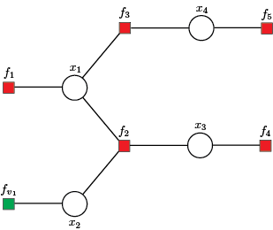

Output Data
The main inference results are kept in the composite type ContinuousTreeModel in the subtype ContinuousInference with fields:
fromFactor,toVariablemeanFactorVariable,varianceFactorVariable,fromVariabletoFactormeanVariableFactor,varianceVariableFactor,mean,variance.
The values of messages from factor nodes to variable nodes can be accessed using meanFactorVariable and varianceFactorVariable fields, while values of messages from variable nodes to factor nodes are stored in meanVariableFactor and varianceVariableFactor fields. These values correspond to edges defined by factor and variable nodes, with indexes preserved in fromFactor - toVariable and fromVariable - toFactor fields.
Fields mean and variance define state variable marginal distributions.
The ContinuousInference field contains the GBP algorithm results. To describe the outputs, we will use the example shown below.
using FactorGraph
# x1 x2 x3 x4
H = [1.0 0.0 0.0 0.0; # f1
-5.0 -4.0 9.0 0.0; # f2
2.2 0.0 0.0 0.5; # f3
0.0 0.0 1.0 0.0; # f4
0.0 0.0 0.0 0.5] # f5
# f1 f2 f3 f4 f5
z = [0.0; 1.7; 1.9; 0.8; 2.1]
# f1 f2 f3 f4 f5
v = [1e-10; 0.1; 0.1; 0.1; 0.1]The factor graph construction and message initialization is accomplished using continuousTreeModel() function.
gbp = continuousTreeModel(H, z, v)Factor graph and root variable node
The first step in solving/analysing the above system/system of equations is forming a factor graph, where set of variable nodes $\mathcal{X} = \{x_1, x_2, x_3, x_4 \}$ is defined by state variables. The set of equations denotes the set of factor nodes $\mathcal{F} = \{f_1, f_2, f_3, f_4, f_5\}$.
Additionally, we include the virtual factor node $f_{v_1}$, where factor node $f_{v_1}$ is singly connected used when the variable node is not directly measured, hence having variance $v_{x_1} \to \infty$ or a priori given mean and variance of state variables. Further, the function continuousTreeModel() sets the first variable node $x_1$ as the root node.
To change defualt values of virtual factor nodes and defualt root variable node use:
gbp = continuousTreeModel(H, z, v; mean = 0.1, variance = 1e60, root = 3)Messages initialization
The initialization step starts with messages from local factor nodes $\{f_1, f_{v_1}, f_4, f_5 \}$ to variable nodes $\mathcal{X}$.
Forward messages from the leaf nodes to the root node
The GBP first forward recursion step starts by computing messages from leaf variable nodes $\{x_2, x_4\}$ to the incidence factor nodes $\{f_2, f_3\}$, using incoming messages from factor nodes $\{f_{v_1}, f_5 \}$.
forwardVariableFactor(gbp)
julia> T = gbp.inference
julia> [T.fromVariable T.toFactor T.meanVariableFactor T.varianceVariableFactor]
5×4 Matrix{Float64}:
2.0 2.0 0.1 1.0e60
4.0 3.0 4.2 0.4
0.0 0.0 0.0 0.0
0.0 0.0 0.0 0.0
0.0 0.0 0.0 0.0The first row defines the message from variable node $x_2$ to factor node $f_2$, the second row keeps the message from variable node $x_4$ to factor node $f_3$. Zero rows are initialized for messages to be calculated in the next forward and backward steps.
The second forward recursion step computes the message from factor node $f_3$ to the variable node $x_1$, using incoming message from variable node $x_4$.
forwardFactorVariable(gbp)
julia> T = gbp.inference
julia> [T.fromFactor T.toVariable T.meanFactorVariable T.varianceFactorVariable]
5×4 Matrix{Float64}:
3.0 1.0 -0.0909091 0.0413223
0.0 0.0 0.0 0.0
0.0 0.0 0.0 0.0
0.0 0.0 0.0 0.0
0.0 0.0 0.0 0.0The first row defines the message from factor node $f_3$ to variable node $x_1$. Zero rows are initialized for messages to be calculated in the next forward and backward steps.
The message passing steps from variable nodes to factor nodes and from factor nodes to variable nodes are then applied recursively until messages have been propagated along every link, and the root node has received messages from all of its neighbours. The FactorGraph keeps flag gbp.graph.forward to signal that moment. Therefore, a complete forward step can be done using:
while gbp.graph.forward
forwardVariableFactor(gbp)
forwardFactorVariable(gbp)
endBackward messages from the root node to the leaf nodes
The GBP first backward recursion step starts by computing message from the root variable node $x_3$ to the factor node $f_2$, using incoming message from factor node $f_4$.
backwardVariableFactor(gbp)
julia> T = gbp.inference
julia> [T.fromVariable T.toFactor T.meanVariableFactor T.varianceVariableFactor]
5×4 Matrix{Float64}:
2.0 2.0 0.1 1.0e60
4.0 3.0 4.2 0.4
1.0 2.0 -2.2e-10 1.0e-10
3.0 2.0 0.8 0.1
0.0 0.0 0.0 0.0The first three rows are obtained using forward steps. The fourth row defines the message from variable node $x_3$ to factor node $f_2$.
The secand backward recursion step computes messages from factor node $f_2$ to variable nodes $\{x_1, x_2\}$.
backwardFactorVariable(gbp)
julia> T = gbp.inference
julia> [T.fromFactor T.toVariable T.meanFactorVariable T.varianceFactorVariable]
5×4 Matrix{Float64}:
3.0 1.0 -0.0909091 0.0413223
2.0 3.0 0.233333 1.97531e59
2.0 1.0 1.02 6.4e59
2.0 2.0 1.375 0.5125
0.0 0.0 0.0 0.0The first two rows are obtained using forward steps. The third row defines the message from factor node $f_2$ to variable node $x_1$, the fourth row keeps the message from factor node $f_2$ to variable node $x_2$.
Thus, the backward recursion starts when the root node received messages from all of its neighbours. It can therefore send out messages to all of its neighbours. These in turn will then have received messages from all of their neighbours and so can send out messages along the links going away from the root, and so on. In this way, messages are passed outwards from the root all the way to the leaves. The FactorGraph keeps flag gbp.graph.backward to signal that moment. Therefore, a complete backward step can be done using:
while gbp.graph.backward
backwardVariableFactor(gbp)
backwardFactorVariable(gbp)
endMarginals
The marginal of variable nodes $\mathcal{X}$ can be obtained using messages from factor nodes $\mathcal{F}$ to variable nodes $\mathcal{X}$. Note that the mean value of marginal is adopted as the estimated value of the state variable. Finally, we obtain:
marginal(gbp)
julia> [gbp.inference.mean gbp.inference.variance]
3×2 Matrix{Float64}:
-2.2e-10 1.0e-10
1.375 0.5125
0.8 0.1
4.0 0.2Where rows correspond with mean and variance values of the state variables $\{x_1, x_2, x_3, x_4 \}$.